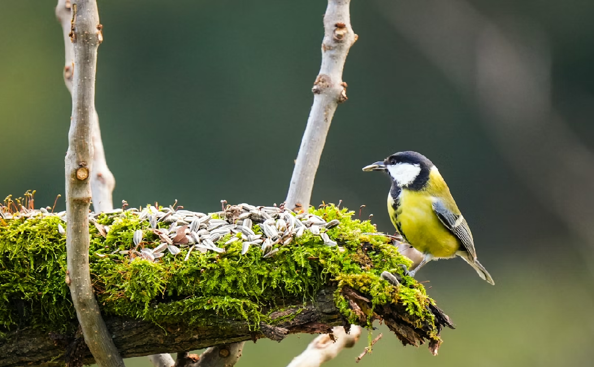
Gardening for Biodiversity: How Nature-Friendly Gardens Benefit Wildlife and Human Wellbeing
Discover how nature-friendly gardens support wildlife and improve human wellbeing through practical biodiversity-friendly gardening choices.
Expert advice, AI insights, and sustainable practices for every gardener.
Explore practical plant care guides, biodiversity tips, and climate-smart gardening articles curated for home gardeners.

Discover how nature-friendly gardens support wildlife and improve human wellbeing through practical biodiversity-friendly gardening choices.
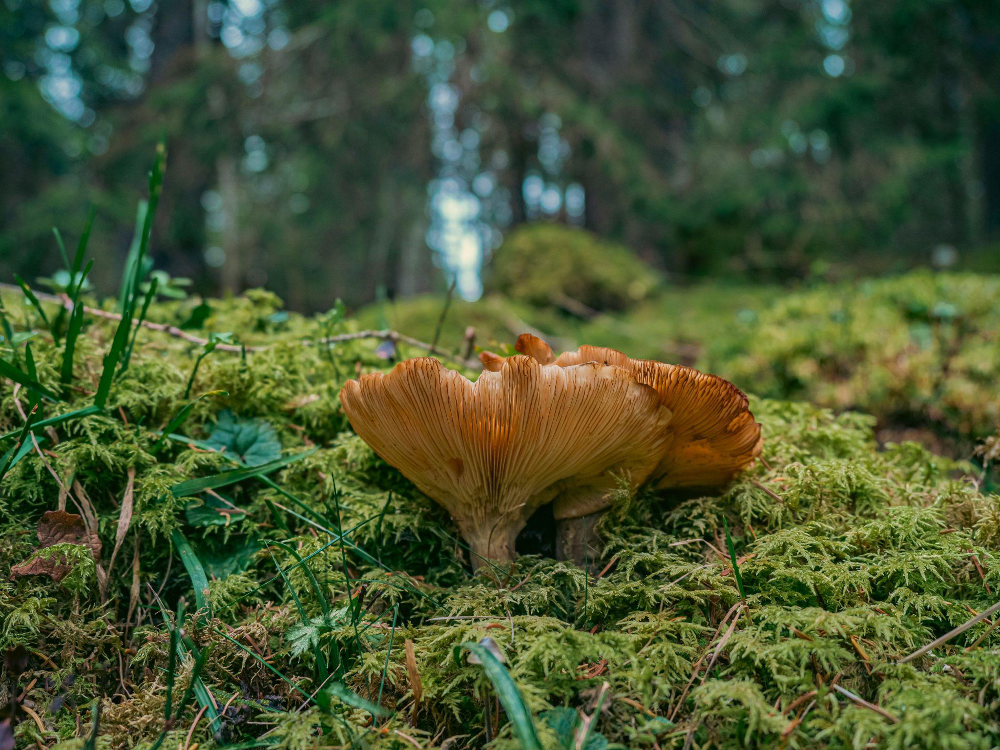
Understand biodiversity and why diverse living systems are essential for resilient gardens, healthy soil, and long-term ecosystem balance.
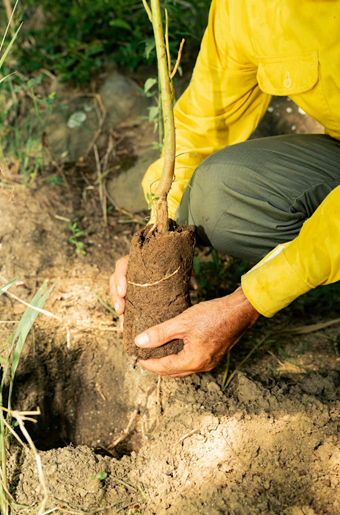
Explore five high-impact plants that feed pollinators, support birds, and strengthen biodiversity in home gardens.
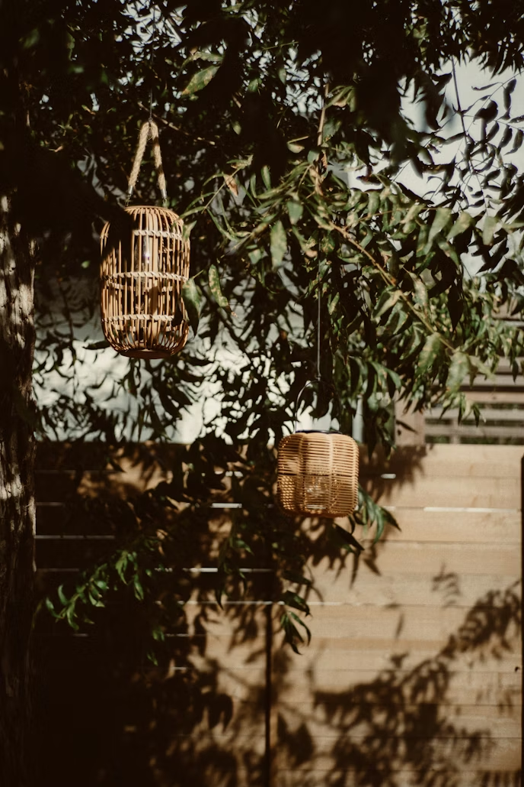
Learn how to attract and protect birds with food sources, shelter, nesting support, and safe water in your garden.

See how simple planting and pesticide-free practices can protect pollinators and improve local ecosystems.
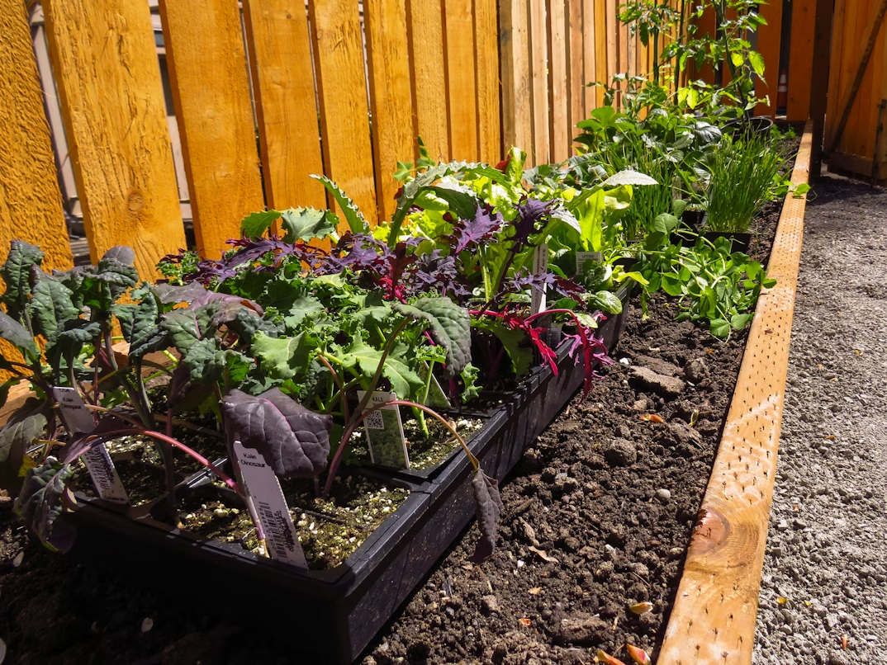
Use climate-smart gardening methods to conserve water, improve soil health, and build resilient green spaces.
Understand frost, seasonal stress, and environmental factors that influence how plants survive and recover.
Explore how climate disruption affects freshwater systems, drought risk, floods, and long-term water security.
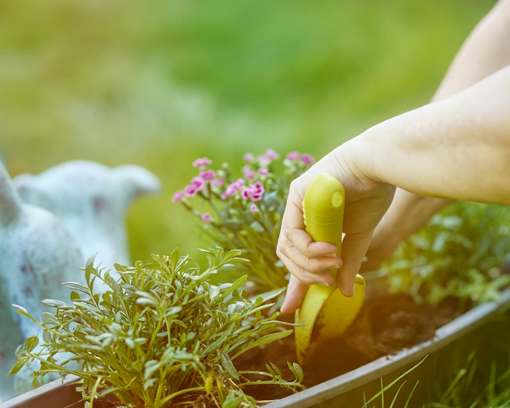
Discover how gardening supports physical health, mental wellbeing, and healthy long-term daily habits.
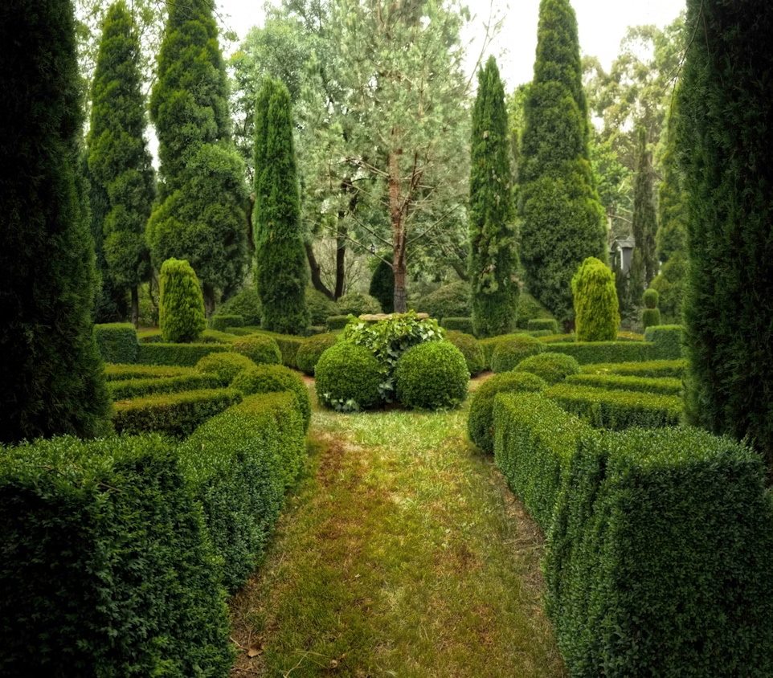
Learn hedge basics for privacy and structure, including planning, pruning, and long-term maintenance.
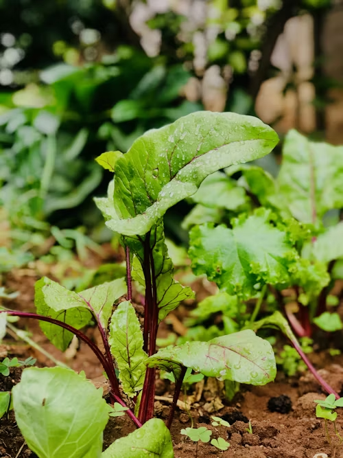
See how sunlight, temperature, water, and soil conditions shape plant growth and overall garden performance.
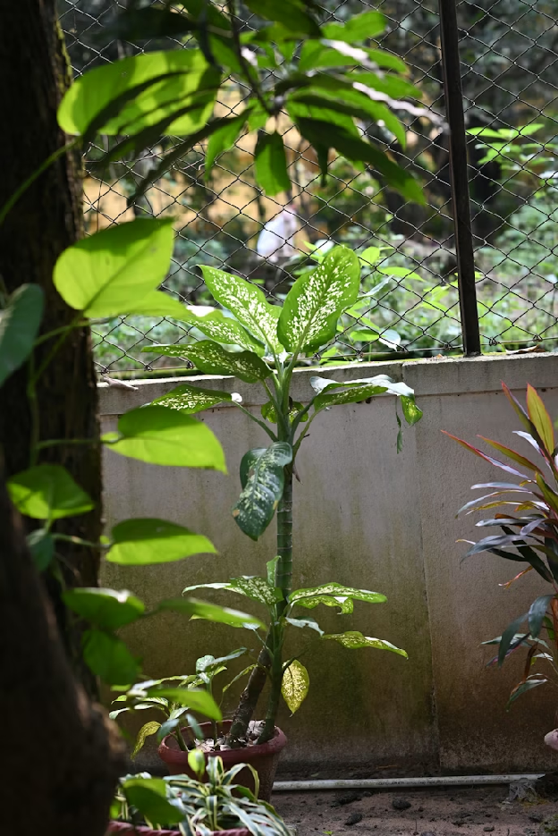
Find out why native tree planting is one of the most practical ways to improve habitat and reduce climate impact.
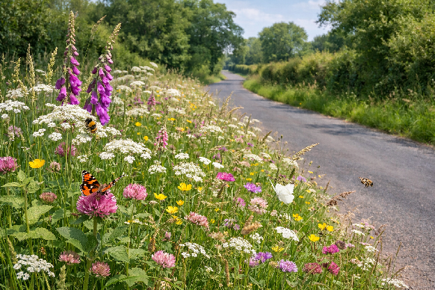
Understand how less intensive verge management can create safer habitats for pollinators and biodiversity.
Pick fast-growing indoor plants that improve air quality and quickly make your home greener and calmer.
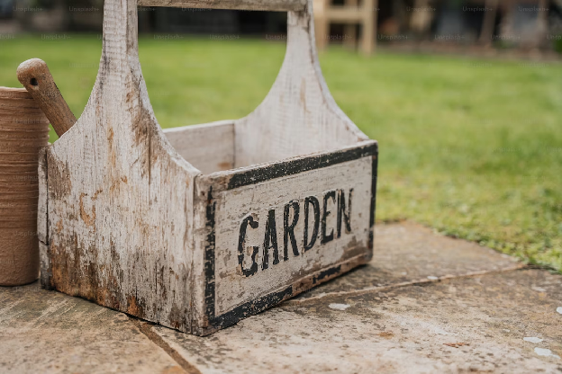
Learn how small-scale gardening can support household income while improving food resilience and sustainability.
Get plant recommendations and estimate your garden's environmental impact with our free tools.
Plant Recommendation Benefit Predictor